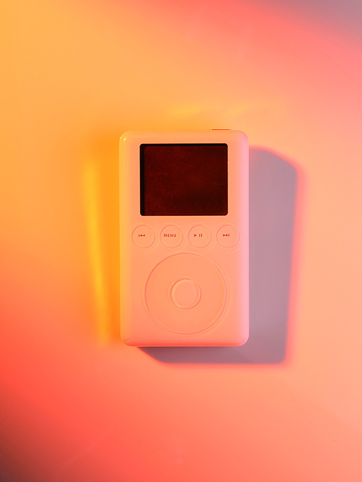
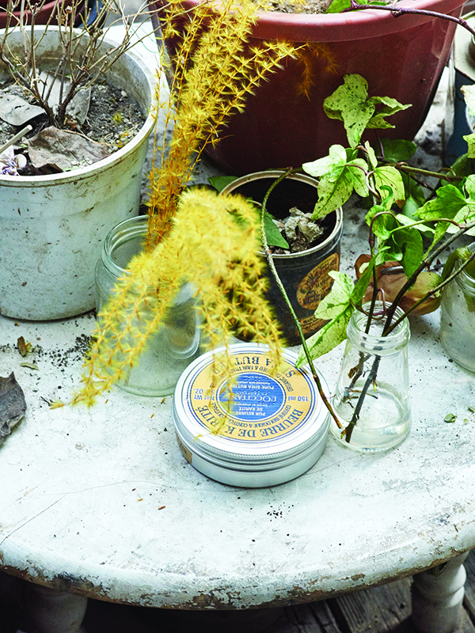
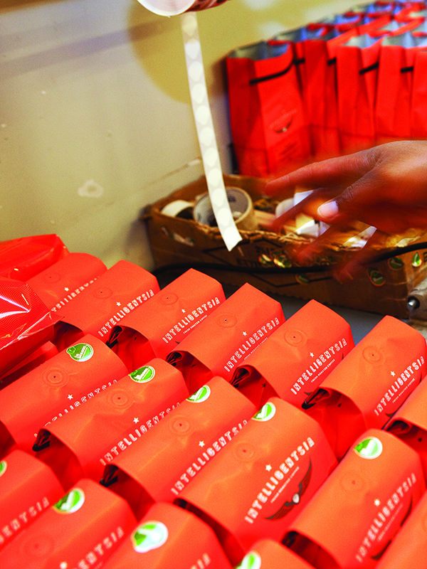

KR
KRShop
Magazine B, Magazine F, Fashion, Hospitality
-

MAGAZINE BISSUE NO.55
APPLE MUSIC
2015년 6월 시작한 애플의 음원 스트리밍 서비스 애플뮤직은 내부 에디터가 직접 큐레이팅한 플레이리스트와 음악 신의 유명 DJ를 내세운 라디오 스테이션을 통해 음악이 범람하는 디지털 시대에 양질의 음악을 접할 수 있는 플랫폼으로 기능하고 있습니다. 또한 독점 스트리밍 계약, 뮤직비디오 제작 투자 등 아티스트와의 유기적 관계를 강화하는 전략으로 상호 간 시너지를 극대화하며 음악 산업의 지평을 넓히고 있습니다.
-

MAGAZINE BISSUE NO.45
L'OCCITANE
록시땅은 1976년 올리비에 보쏭이 프로방스 지방의 대도시 마르세유 지역에서 민간요법에 따른 방식으로 비누를 만들면서 시작했습니다. 이후 프로방스에서 자라는 라벤더나 아몬드 등에서 추출한 원료를 바탕으로 품질이 우수한 화장품을 선보이는 록시땅은 원재료의 수확 시기에 제품 출시를 맞추거나, 원산지 농민들의 삶을 돌보는 등 ‘자연이 주는 모든 것을 존중’하자는 신
-

MAGAZINE BISSUE NO.11
INTELLIGENTSIA
1995년 시카고의 작은 커피 전문점으로 시작한 인텔리젠시아는 생산지와 품종이 확실하며, 맛이 뛰어난 커피를 제공하는 스페셜티 커피계의 선두 주자입니다. 소규모 커피 브랜드로 시작하여 현재는 대형 커피 브랜드들을 위협할 만큼 성장한 이들은 커피가 재배되어 소비자에게 도착하는 과정에 관여하는 모든 사람이 커피를 제대로 알고 대함으로써 더 좋은 커피 문화를 만들 수